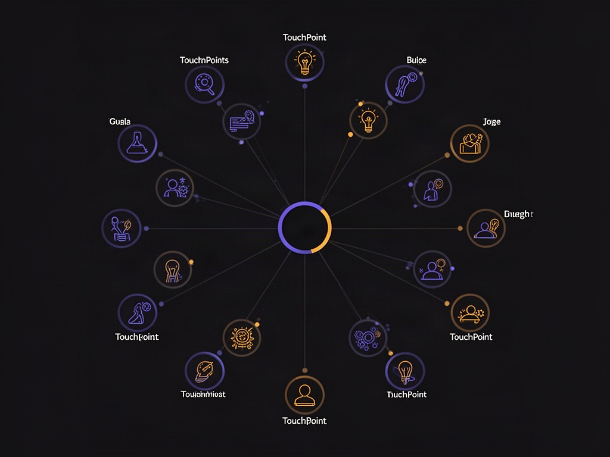
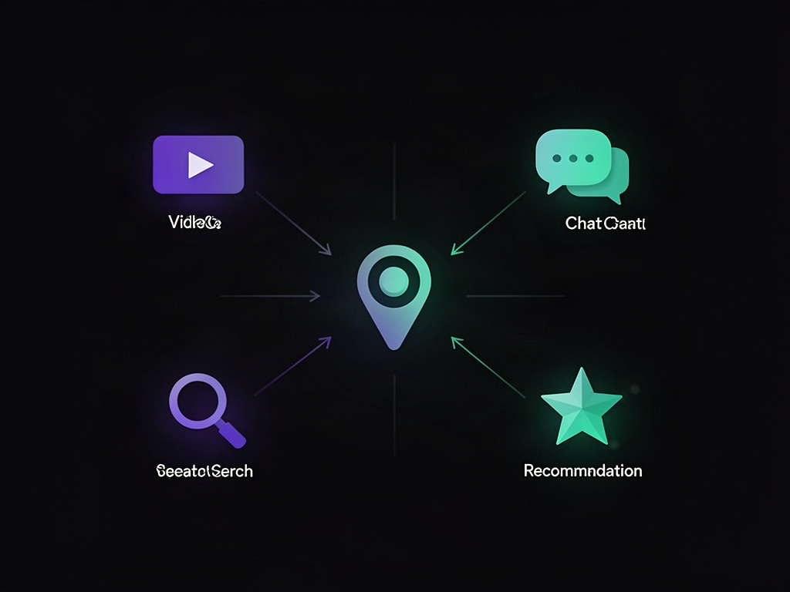

Você já viu esse desenho: um triângulo invertido, largo em cima, estreito embaixo. Topo do funil, meio do funil, fundo do funil. Alcance, consideração, conversão. Por décadas essa foi a metáfora oficial de como alguém vira cliente — e por décadas ela até fez sentido, porque o consumidor não tinha muito lugar pra consultar antes de decidir.
Esse mundo acabou. E o funil, como metáfora estrutural, não sobrevive bem à mudança.
Por que o funil parou de descrever a realidade
A premissa do funil é que existe uma sequência: primeiro você desperta interesse, depois nutre consideração, depois converte. Um caminho com ordem definida, cada etapa alimentando a próxima. Isso presumia um consumidor com acesso limitado a informação — que precisava de você, a marca, pra guiá-lo etapa por etapa até a decisão.
Hoje esse consumidor tem uma busca com IA no bolso que responde qualquer dúvida na hora, um feed que ele mesmo escolhe, e a capacidade de pular direto pra decisão de compra sem passar por nenhuma das etapas "obrigatórias" que uma empresa desenhou pra ele. Ele não segue o roteiro. Ele entra e sai da jornada em qualquer ponto, na ordem que quiser, e muitas vezes decide antes mesmo de você perceber que ele estava "no funil".
O framework que substitui a linha reta por um centro
Existe pesquisa recente sobre como as pessoas realmente compram hoje, e o achado central inverte a lógica do funil: em vez de um caminho linear com início e fim, a jornada de compra passou a se parecer mais com um espaço aberto — múltiplos pontos de contato ao redor de um centro, sem ordem obrigatória entre eles.

A imagem mental certa não é mais um funil, é mais parecida com um playground: você (a marca) fica no centro, e ao redor existem pontos de contato variados — vídeo, busca, resposta de IA, recomendação de terceiro, anúncio, conteúdo orgânico — que a pessoa visita na ordem que ela escolhe, quantas vezes quiser, sem hierarquia fixa entre eles. Não existe mais "topo" nem "fundo". Existe presença, ou ausência, em cada ponto que importa.
O parente mais antigo dessa ideia: o flywheel
Esse modelo não nasceu do zero — ele é primo direto do conceito de flywheel (o "volante de inércia"), que já vinha ganhando espaço como alternativa ao funil nos últimos anos. A lógica do flywheel é simples: você atrai pessoas, engaja com elas, converte em clientes, e esses clientes — se bem atendidos — voltam a alimentar a atração de novas pessoas. É um ciclo que gira sozinho, ganhando momentum, em vez de uma linha que termina na venda e reinicia do zero pro próximo lead.
A diferença prática entre pensar em funil e pensar em ciclo é onde você coloca energia. Funil te faz otimizar cada etapa isoladamente, perseguindo taxa de conversão etapa a etapa. Ciclo te faz perguntar o que mantém a roda girando — e a resposta quase sempre inclui o que acontece DEPOIS da venda, que o funil tradicional simplesmente não modela.
O que muda na prática pra quem cria conteúdo ou vende

Se a jornada não tem mais ordem fixa, a implicação direta é que você não pode mais escrever "conteúdo de topo de funil" torcendo pra pessoa migrar sozinha pro conteúdo de fundo. Cada ponto de contato precisa, por si só, ser capaz de levar a pessoa até a decisão — porque você nunca sabe em qual ponto ela vai entrar primeiro, nem se ela vai passar pelos outros antes de decidir.
Isso muda a pergunta central de "em que etapa do funil esse conteúdo está?" para "esse ponto de contato, sozinho, resolve a dúvida e empurra pra ação?". Um vídeo educativo não precisa mais existir só pra "aquecer" — ele precisa aguentar ser o único contato que aquela pessoa vai ter antes de decidir comprar ou não.
Onde a IA generativa encaixa nisso
Um dos pontos de contato que mais cresceu nesse novo modelo é a resposta direta de uma IA generativa — a pessoa pergunta, recebe uma síntese, e às vezes decide ali mesmo, sem nunca visitar o site da marca. Isso é uma versão radical do que o playground já descreve: um ponto de contato que pode, sozinho, fechar o ciclo inteiro sem passar por nenhum outro.
Isso reforça a mesma conclusão do framework mais amplo: presença importa mais que sequência. Se a sua marca não aparece na fonte que essa IA consulta pra montar a resposta, você já perdeu aquele ponto de contato inteiro — não porque a pessoa "não chegou no fundo do funil", mas porque você simplesmente não estava no lugar certo quando ela perguntou.
O que fazer com isso
| Mentalidade de funil | Mentalidade de playground/ciclo |
|---|---|
| Sequência fixa de etapas | Múltiplos pontos de contato sem ordem obrigatória |
| Conteúdo segmentado por etapa (topo/meio/fundo) | Cada ponto de contato precisa funcionar sozinho |
| Otimizar taxa de conversão por etapa | Otimizar presença em todos os pontos relevantes ao mesmo tempo |
| Venda como fim de linha | Venda como um ponto no ciclo que realimenta o próximo |
O funil não morreu como ferramenta de análise interna — ainda é útil pra entender métricas de conversão dentro de uma campanha específica. O que morreu é a ideia de que o consumidor real segue esse caminho ordenado que a empresa desenhou. Ele não segue. Ele entra pelo meio, sai, volta por outro canal, decide num ponto que você nem tinha mapeado como "importante". Quem constrói presença em vários pontos ao mesmo tempo — em vez de empurrar todo mundo pelo mesmo funil — é quem continua sendo encontrado, não importa por onde a pessoa decida entrar.